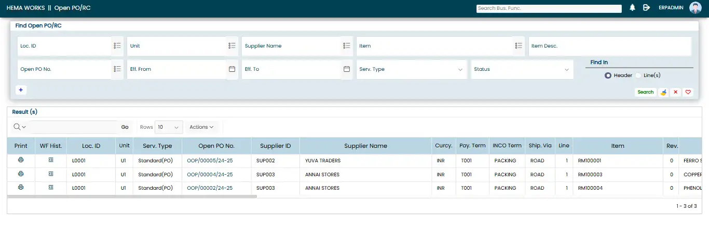
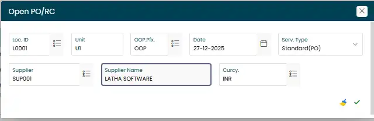
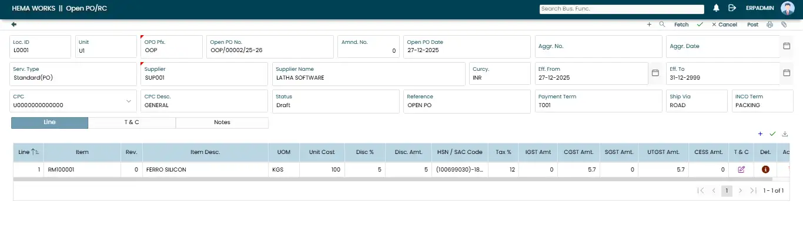
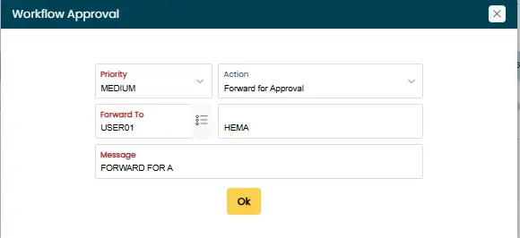
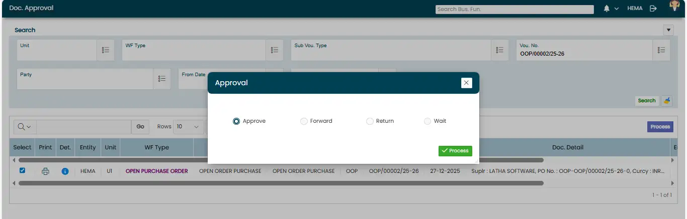

<div data-category="Purchase Order" data-title="Open/Blanket PO Entry" data-updated="December 01, 2025" data-contributors="RoadmapIT" data-breadcrumb="Home,Purchase Order,Open/Blanket PO Entry">
  <div class="page-content">
    <p>The Open/Blanket Purchase Order screen is used to establish the contracted price of items with a specific supplier. This feature allows for setting agreed-upon pricing terms and conditions for ongoing or future purchases, ensuring consistency and clarity in procurement transactions.</p>

    <h5>Navigation path:</h5>
    <p class="fs-6">Supply Chain Management \ Purchasing \ Transactions \ Open PO/RC</p>

    
    <ul>
      <li>Open PO/RC is to create a new document.</li>
      <li>Open PO/RC Amendment option is to amend the blanket PO.</li>
    </ul>

    
    <ul style="list-style-type: none; align-content: center">
      <li class="mouse-icon">Search screen displays the list of Open Blanket orders with the relevant details and its status.</li>
      <li class="mouse-icon">Click on search button to filter all the records.</li>
      <li class="mouse-icon">User can filter the respective documents by entering the search parameters at the header.</li>
      <li class="mouse-icon">Using search button, system displays the results relevant to the search parameters entered.</li>
      <li class="mouse-icon">On clicking; the corresponding transaction record will be displayed.</li>
      <li class="mouse-icon">Using <i class="bi bi-eraser text-secondary"></i> icon, entered search parameters can be cleared.</li>
      <li class="mouse-icon">To close the screen, use <i class="bi bi-x-lg text-danger"></i> icon.</li>
      <li class="mouse-icon">
        By Clicking the
        <i class="bi bi-plus fs-4 mx-2 text-primary"></i>
        Add button we can create new Open Blanket Orders by entering all the mandatory fields displayed in the Add dialog.
      </li>
    </ul>

    
    <ul style="list-style-type: none; align-content: center">
      <li class="mouse-icon">Enter/Select the location, unit is auto fetched.</li>
      <li class="mouse-icon">Specify the corresponding PO Pfx.</li>
      <li class="mouse-icon">Enter/Select the Supplier from LOV.</li>
      <li class="mouse-icon">Select the PO pfx. By default, the service type is Standard (PO). It can be changed as per the requirement.</li>
      <li class="mouse-icon">
        Click on
        <i class="bi bi-check-lg fs-4 mx-1 text-success"></i>
        button to create the Open Blanket entry.
      </li>
    </ul>

    
    <ul style="list-style-type: none; align-content: center">
      <li class="mouse-icon">Enter the Effective From and Effective To date.</li>
      <li class="mouse-icon">Enter/Select the Item.</li>
      <li class="mouse-icon">The Line items for the supplier can also be selected by fetching the items by using Fetch button.</li>
      <li class="mouse-icon">Enter the Unit Cost.</li>
      <li class="mouse-icon">Enter the Disc%, Disc Amt. is auto calculated.</li>
      <li class="mouse-icon">HSN Code defined for the items in the item master is auto updated in the lines.</li>
      <li class="mouse-icon">The payment term can be given for the respective supplier from the corresponding dialog.</li>
      <li class="mouse-icon">The Document will be sent for approval using the post button.</li>
      <li class="mouse-icon">The necessary work flow operations are done in the Workflow document control screen.</li>
    </ul>

    
    <ul style="list-style-type: none; align-content: center">
      <li class="mouse-icon">Document Forward to forward user.</li>
      <li class="mouse-icon">Log in Forward user.</li>
      <li class="mouse-icon">
        To Click View details
        <i class="bi bi-info-circle text-primary"></i>
        For specific document.
      </li>
      <li class="mouse-icon">Screen navigate into query screen to check the details.</li>
      <li class="mouse-icon">After click the close button document navigate into Approval screen.</li>
      <li class="mouse-icon">Choose the Approval/forward/Return button field and click Process button required process performed.</li>
    </ul>

    
    <ul style="list-style-type: none; align-content: center">
      <li class="mouse-icon">Choose the Approval/forward/Return button field and click Process button required process performed.</li>
    </ul>
  </div>
</div>
